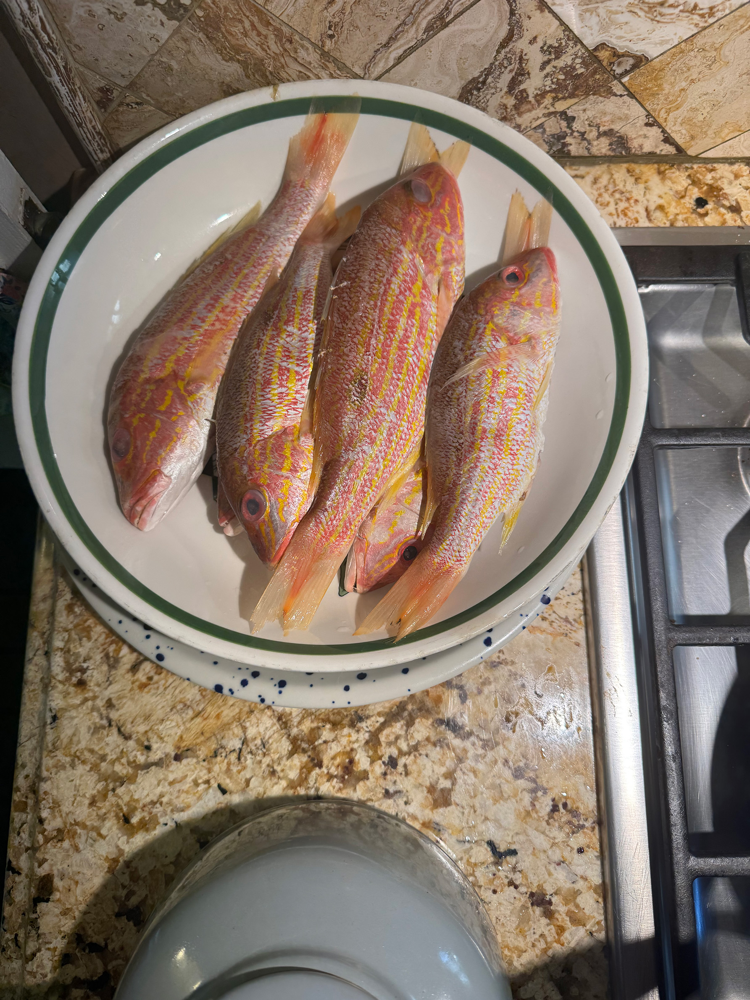
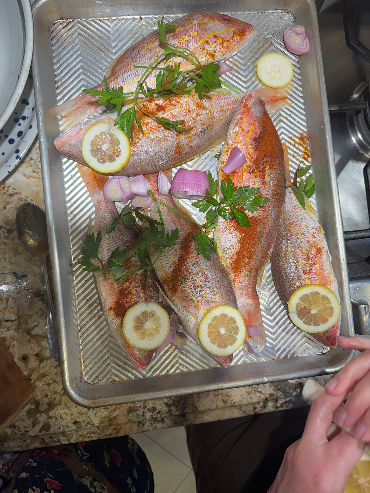
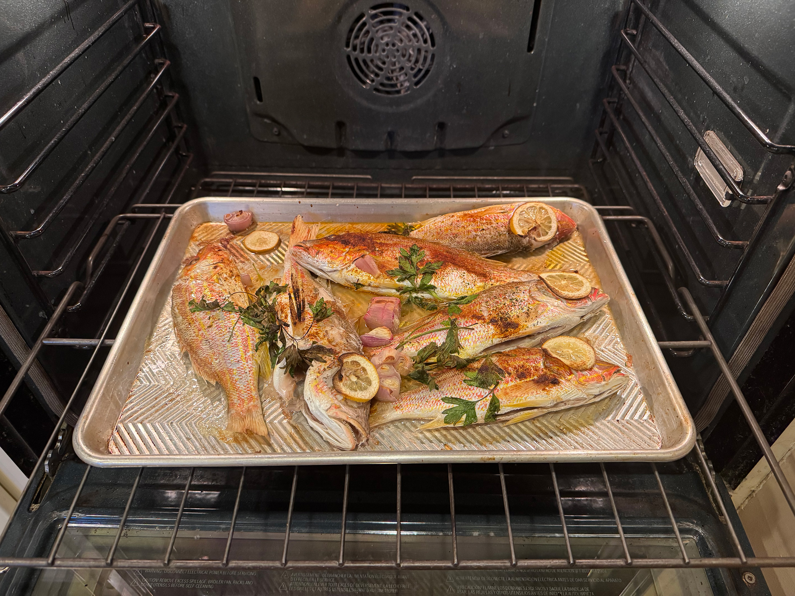
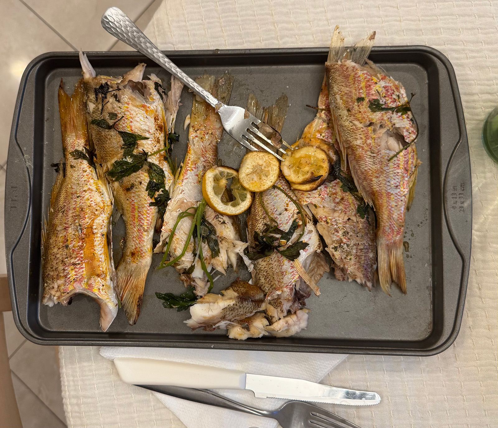

My younger sister, Mia was visiting from school this weekend. To make use of this, my family decided to have an early birthday celebration for my grandma, who is turning 85 on October 23! A request from both my sister and grandma is always to have fresh, simple fish (especially since the dining hall's fish is disgusting, as my sister describes it.)
My mom cooked this time, and she baked whole red snappers in the oven with simple garnishes and sides. While my family cooked this with many sources of inspiration, my main source of guidance for this fish is not to a person, but a place: Sicily. This is were my grandparents grew up, and where my mom spent her summers visiting friends, loved ones, and eventually exploring the islands with my dad. It is here that she learned her passion for simple, fresh cooking.
After cleaning the fish, we dry and set aside to prepare other elements (1). Roughly chop shallots (or garlic and only, if you do not have that), and parsley. Cut lemons into slices. Place fish on a tray, covering with the chopped elements and spreading around the tray evenly (2). Once this is done, drizzle desired amount of lemon juice, salt, pepper, and olive oil on top and place in the oven to cook at 415 degrees Fahrenheit. Fish is done once internal temperature hits 145 (3)!
While in the oven, prepare a chimmichurri inspired sauce: dice parsley and lemon rind. Add oil to fully submerge the herb and add desired seasonings. Squeeze the juice from a lemon to add acidity. Top on the fish and/or vegetables served with it.
1
2
3
Just out of the oven:
 INGREDIENTS
Whole red snapper filet(s)
lemon slices
Fresh Parsley
Shallots
Salt
Pepper
Olive oil
FOR THE SAUCE
Kosher salt
finely chopped parsely
garlic powder
Red pepper flakes (optional)
Diced lemon rinds
Lemon juice
Olive oil